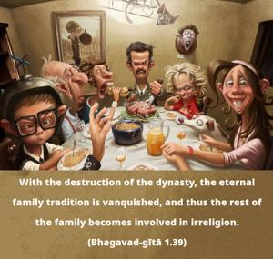
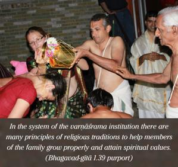
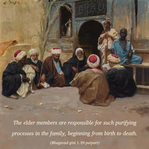

With the destruction of the dynasty, the eternal family tradition is vanquished, and thus the rest of the family becomes involved in irreligion.



In the system of the varṇāśrama institution there are many principles of religious traditions to help members of the family grow properly and attain spiritual values. The elder members are responsible for such purifying processes in the family, beginning from birth to death. But on the death of the elder members, such family traditions of purification may stop, and the remaining younger family members may develop irreligious habits and thereby lose their chance for spiritual salvation. Therefore, for no purpose should the elder members of the family be slain.